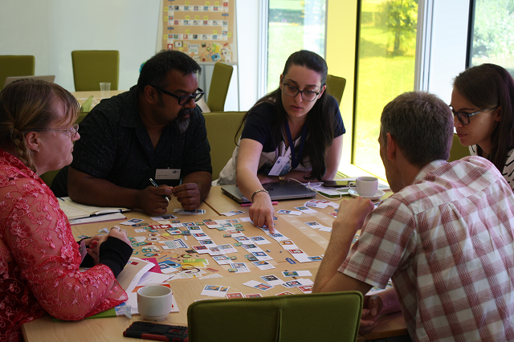

Download printable files
Our Journey was originally developed as a poster and set of cards. This version is ideal to use in face to face conversations, workshops, or training events. Use the links below to download printable .pdf versions.


The Our Journey printable cards and poster by The Open University (Tim Coughlan, Glen Darby and Kate Lister) is licensed under a Creative Commons Attribution-NonCommercial-ShareAlike 4.0 International License.
Based on a work at https://iet-ou.github.io/our-journey/.
Journey board poster (designed to be printed at A1 size)
Journey card set
An example journey (designed to be printed at A1 size)
Go back